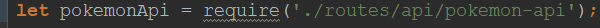
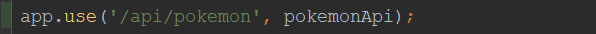
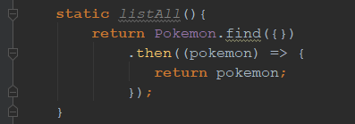
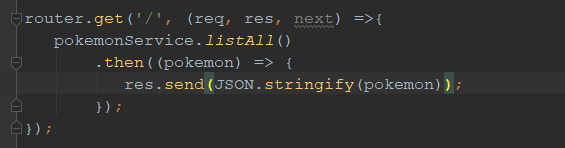
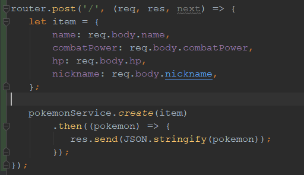
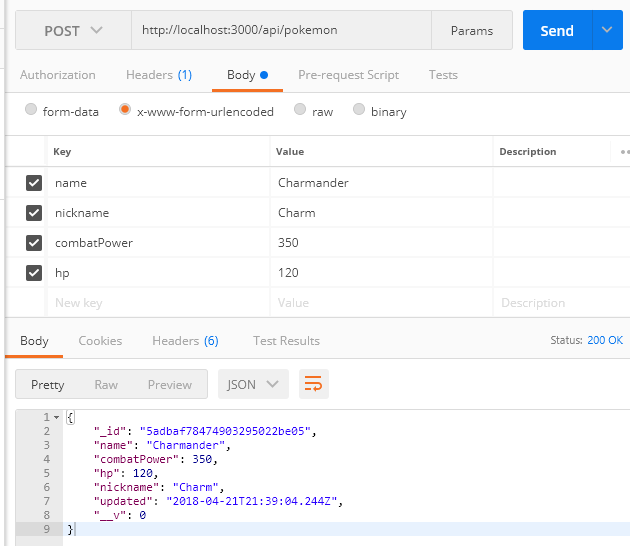
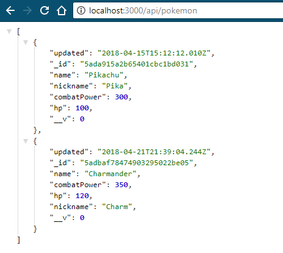

This tutorial will teach you to create CRUD API end points using NodeJS, ExpressJS, MongoDB, and Mongoose.
This tutorial assumes that you have your application already started and connected to a MongoDB collection. We'll only cover creating the controller and API endpoints in Express.
Creating Directories and Files
To start, make sure you create a directory titled controller at the root level. And another called api within your routes directory.
Once the folders are created, inside the /controller directory, create a file called pokemonController.js. You can name it anything you want.
Inside the /routes/api directory, create a file called pokemon-api.js. Again, you can name it anything you want.
Modify app.js
In order for our new api route to be useful, we need to tell our app.js to look for and accept visitors to those routes. In app.js, require the pokemon-api.js file along with your other routs:
Then after your indexRouter is defined, tell your app to use the newly created route:
Initialize pokemonController.js
Now that our app routes are set up, we need to tell our new controller to do stuff. We should first apply some basics to the file by telling it to look at our model and to export a custom class as a service:

The module exports is exporting this as a service which can be imported into our API file later on.
Create our READ method
Now that we have our controller set up properly, let's write a quick static method to READ all documents within our collection:
The listAll() method is using our model to find and return ALL documents within the collection specified in our model. Now we need to tell our API file to call this method.
Initialize pokemon-api.js
Before we write code to call the listAll() method from our controller, let's initialize our API file first.
The first two lines are creating the ExpressJS router. The next two lines are looking at our Controller and creating a service called pokemonService which we can access for all of our API routes.
But before we create our first route, let's add some more code and set the Content-type of our responses as application/json. This will the consumers of our API that all responses sent are in JSON.
The next() method just tells our script to keep moving after router.use() has completed. Now we create our first API route to GET all of our data.
Access the READ method with our API
Let's create a simple GET method which access the pokemonService and sends a response as a JSOn string.
Let's run the app with npm start if you're using NPM and let's go to the route via http://localhost:3000/api/pokemon. The domain and route can be whatever you specified it to be:
If you already had a document within your collection like I did, you will see data outputted. If you're not using a JSON formatter like I am, you will just see a long JSON string and that's perfectly normal.
If you don't have a document yet, let's create one with our POST API!
Our CREATE method
Now that we know how to read all the documents, let's do the C in our CRUD API.
In our Controller, create a new static method called create() which takes an object as a parameter:
Our create(obj) method looks for an object sent by the API and creates a new Pokemon object using our model. Then we save the newly created Pokemon object and return its value to our api.
API POST Method
We need to send some data to our controller from our API, but we need to receive the data using the POST method. In our pokemon-api.js file, create a new route with the post method as shown:
The item object reads the request and assigns the values sent in the body of the request to the four properties that our model specifies. We then send the item to our pokemonService.create()
method to post this data. Once done, we receive a response and send it back to the consumer of the API as stringified JSON.
Testing our POST API
To test our POST API, you can use any REST API application. I am using Postman. In Postman, I send data to http://localhost:3000/api/pokemon via POST with four sets of data (name, nickname, combatPower, and hp).
If all is set up correctly, when you send this request, you will get a JSON object back confirming your input along with an _id which was automatically generated by MongoDB.
You can also use your browser to test and make s ure the new document now shows up.
